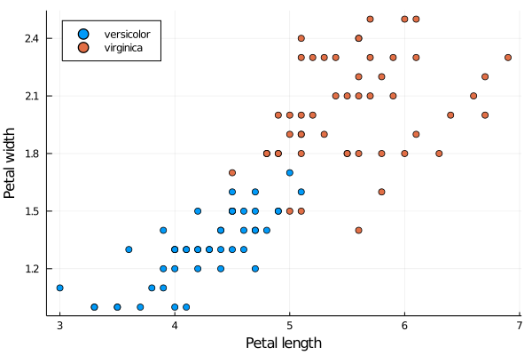
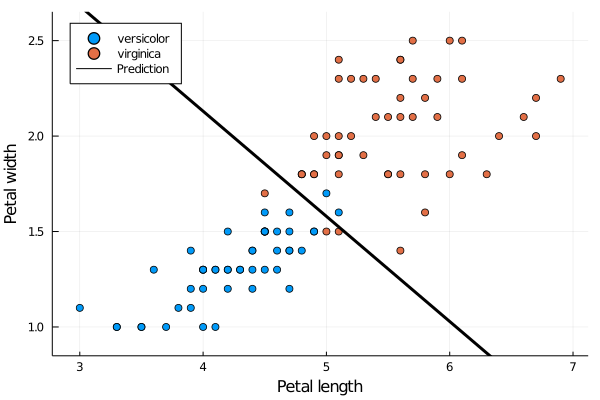

Logistic regression
The last part predicted a continuous variable. This part will be closer to the iris dataset's spirit: It will predict one of two classes.
Load the data as before
using StatsPlots
using RDatasets
iris = dataset("datasets", "iris")The data contain three classes. However, we considered only binary problems with two classes. We therefore cheat.
Modify data in the following way:
- Label "setosa" will be deleted.
- Label "versicolor" will be the negative class.
- Label "virginica" will be the positive class.
For the features, consider only petal length and petal width.
Solution:
For reason which will be clear later, we will first create the reduced dataset by removing the "setosa' label
iris_reduced = iris[iris.Species .!= "setosa", :]Now we can create data X and labels y. Since iris_reduced is a DataFrame, we need to convert it first into a Matrix before calling hcat. Note that we use iris_reduced.Species instead of the equivalent iris_reduced[:,Species]
X = hcat(Matrix(iris_reduced[:, 3:4]), ones(size(iris_reduced,1)))
y = iris_reduced.Species .== "virginica"We again plot the data. Since we are interested in a different prediction than last time, we will plot them differently.
Since X has two features (columns), it is simple to visualize. Use scatter plot to show the data. Use different colours for different classes. Try to produce a nice graph by including names of classes and axis labels (petal length and petal width).
Solution:
We make use of the iris_reduced variable. To plot the points in different colours, we use the keyword group = :Species.
using Plots
@df iris_reduced scatter(
:PetalLength,
:PetalWidth;
group = :Species,
xlabel = "Petal length",
ylabel = "Petal width",
legend = :topleft,
)
We see that the classes are almost perfectly separable. It would not be difficult to estimate the separating hyperplane by hand. However, we will do it automatically.
Training the classifier
Write a function log_reg which takes as an input the dataset, the labels and the initial point. It should use Newton's method to find the optimal weights $w$. Print the results when started from zero.
It would be possible to use the code optim(f, g, x, s::Step) from the previous lecture and define only the step function s for the Newton's method. However, sometimes it may be better to write simple functions separately instead of using more complex machinery.
Solution:
To write the desired function, we need to implement the gradient and Hessian from derived in the theoretical lecture. First, we need to create $\hat y$. We may use for loop notation [1/(1+exp(-w'*x)) for x in eachrow(X)]. However, in this case, it is simpler to use matrix operations 1 ./(1 .+exp.(-X*w)) to get the same result. The gradient can be written in the same way. Again, we use matrix notation. For the Hessian, we first create X_mult = [row*row' for row in eachrow(X)] which computes all products $x_ix_i^\top$. This creates an array of length $100$, each element of this array is a $2\times 2$ matrix. Since it is an array, we may multiply it by y_hat.*(1 .-y_hat). As mean from the Statistics package operates on any array, we can call it (or similarly sum). We may use mean(???) but we find the alternative ??? |> mean more readable in this case. We use hess \ grad, as explained in the previous lecture for Newton's method, to update the weights.
using Statistics
function log_reg(X, y, w; max_iter=100, tol=1e-6)
X_mult = [row*row' for row in eachrow(X)]
for i in 1:max_iter
y_hat = 1 ./(1 .+exp.(-X*w))
grad = X'*(y_hat.-y) / size(X,1)
hess = y_hat.*(1 .-y_hat).*X_mult |> mean
w -= hess \ grad
end
return w
endThe definition of X_mult should be outside the for loop, as it needs to be computed only once.
After the tough work, it remains to call it.
w = log_reg(X, y, zeros(size(X,2)))The correct solution is
[5.7545, 10.4467, -45.2723]
Analyzing the solution
We can now show the solution. Since the intercept is the third component (where $x_3=1$), the separating hyperplane takes form
\[w_1x_1 + x_2x_2 + w_3 = 0.\]
To express it as a function, we obtain
\[\operatorname{sep}(x_1) = x_2 = \frac{-w_1x_1 - w_3}{w_2}.\]
Now we plot it.
f_hyper(x, w) = (-w[3]-w[1]*x)/w[2]
xlims = extrema(iris_reduced.PetalLength) .+ [-0.1, 0.1]
ylims = extrema(iris_reduced.PetalWidth) .+ [-0.1, 0.1]
@df iris_reduced scatter(
:PetalLength,
:PetalWidth;
group = :Species,
xlabel = "Petal length",
ylabel = "Petal width",
legend = :topleft,
xlims,
ylims,
)
plot!(xlims, x -> f_hyper(x,w); label = "Prediction", line = (:black,3))
This is the optimal solution obtained by the logistic regression. Since the norm of the gradient
using LinearAlgebra
y_hat = 1 ./(1 .+exp.(-X*w))
grad = X'*(y_hat.-y) / size(X,1)
norm(grad)6.997509830836602e-17
equals to zero, we found a stationary point. It can be shown that logistic regression is a convex problem, and, therefore, we found a global solution.
The picture shows that there are misclassified samples. The next exercise analyses them.
Compute how many samples were correctly and incorrectly classified.
Solution:
Since $\hat y_i$ is the probability that a sample is of the positive class, we will predict that it is positive if this probability is greater than $\frac 12$. Then it suffices to compare the predictions pred with the correct labels y.
pred = y_hat .>= 0.5
"Correct number of predictions: " * string(sum(pred .== y))
"Wrong number of predictions: " * string(sum(pred .!= y))There is an alternative (but equivalent way). Since the separating hyperplane has form $w^\top x$, we predict that a sample is positive whenever $w^\top x\ge 0$. Write arguments on why these two approaches are equivalent.
The correct answer is
Correct number of predictions: 94 Wrong number of predictions: 6